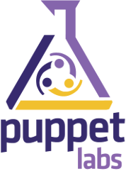
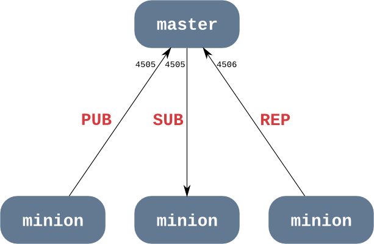
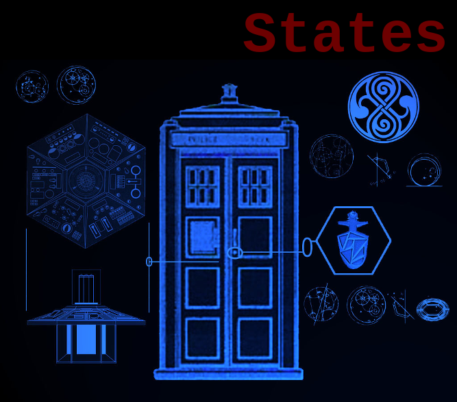

C'est un gestionnaire de configuration, à l'instar de :

Salt possède un certain nombre d'avantages par rapport à ses concurrents :
syntaxe claire (comparé à Puppet ou Cfengine)
rapidité
possibilité d'exécuter des commandes salt sur une machine distante sans pour autant :
installer salt sur la machine distante
modifier les fichiers de description de Salt
Pas d'interrogation
Envoi
Le master envoie les
instructions
aux minions pour leur indiquer quoi faire.
ØMQ
PUB/SUB sur le port 4505
REP sur le port 4506
Un diagramme simple comme bonjour

MessagePack
pour sérialiser les messages
format binaire
structures de données simples
compact
Tout est
chiffré
Il utilise d'abord des
clés publiques
pour l'authentification
Le master doit connaître les clés publiques des minions
Puis, il utilise
AES
pour la communication
(symétrique, plus rapide)
Comment accepter les clés des minions ?
# salt-key -L
Accepted Keys:
Unaccepted Keys:
minion_1
Rejected Keys:
# salt-key -a minion_1
The following keys are going to be accepted:
Unaccepted Keys:
minion_1
Proceed? [n/Y] y
Key for minion minion_1 accepted.
# salt 'minion_1' test.ping
minion_1:
True
Machines sous contrôle
Elles recoivent leurs intructions via
PUB/SUBZeroMQ
Possibilité de configuration
sansmaster
(avec salt-call)
Ils fournissent les
fonctionnalités
Exécutez les modules en CLI !
# salt '*' cmd.run 'ls /'
…
# salt '*' state.highstate
…

C'est ce qu'on
gère
ou
configure
sur les
minions
Les states ne sont que des
données
habituellement en YAML
Ils correspondent généralement à des fonctions des